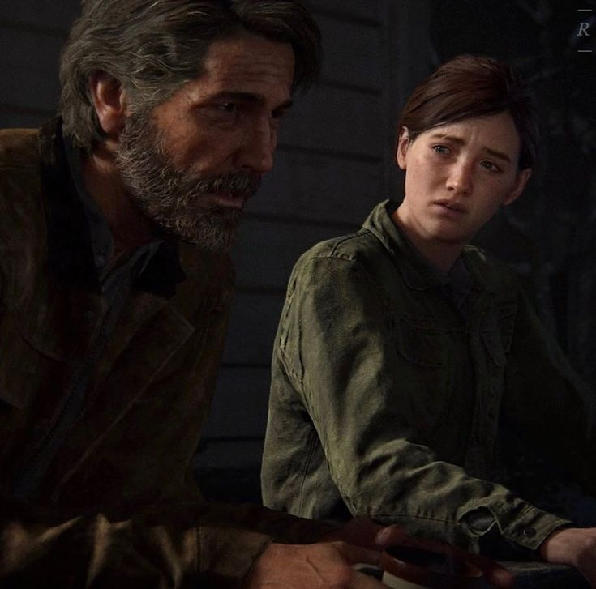
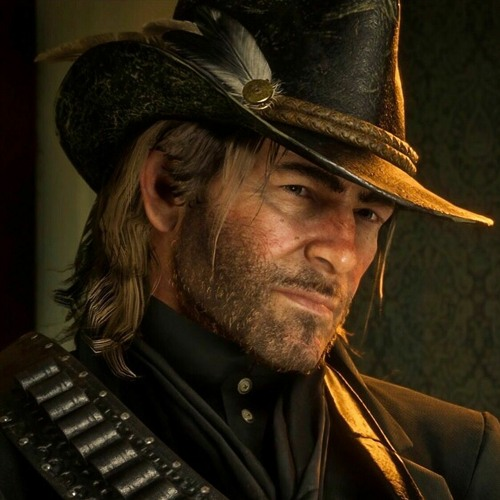

Chyba każdy z nas mógłby wymienić chociaż jedną postać z gier, która wywołuje u nas wspomnienia negatywne bądź pozywtywne. Zapytani gracze udzielili nam informacji o swoich doznaniach z fikcyjnymi postaciami.
- Arthur Morgan dubbingowany przez Rogera Clarka jest kowobojem z lat 1899, który ucieka wraz ze swoim gangiem przed prawem. Produkcja Rockstar Games RDR2 jest wysoko notowaną grą za swoją grafike ale również za postacie, które występują w niej. Arthur posiada wspaniale stworzony charakter, wiele osób kojarzy go jako świetnego kompana ale dużo osób pamięta smutny koniec jego żywota, który wywołał wiele łez.
- Geralt z Rivii “Postać wykreowana przez polskiego pisarza Andrzeja Sapkowskiego pojawiła się w książkach jak i w grach studia CD Projekt Red oraz ostatnio na platformie Netflix w serialowym wydaniu. Biało włosy wiedźmin ze szkoły wilka przeżył wiele przygód na swoim szlaku. Wraz z wydarzeniami Geralta poznajemy również wiele innych postaci, które zasługują na chwile uwagi. Geralt nazywany jest przez driady oraz elfów jako Gwynbleidd, badź przez rzeź wywołaną w Blaviken jest on postrzegany po wsiach jako Rzeźnik z Blaviken.
- Joel i Ellie  postacie występujące w grach The Last of Us, wyprodukowanych przez studio Naughty Dog, które wydało również gry takie jak Uncharted. Dwójka bohaterów osadzonych w czasie apokalipsy zombie próbuje przetrwać. Joel na początku relacji z Ellie był sceptyczny, ponieważ przypominała mu jego córke Sare, którą stracił w czasie ucieczki z miasta. Z czasem zaprzyjaźnili się a na koniec Joel trakotwał ją jak córke co spowodowało że postanowił zabić osoby, które chicały stworzyć lek na wirusa z mózgu Ellie. Troche o Ellie jest to dziewczyna która została ugryziona przez zombie lecz z jakiegoś powodu nie zamieniła się w jedną z nich. Moment który spowodował wiele smutku u graczy była śmierć Joela w drugiej odsłonie gry.

“I gave you all I had.”
Zło to zło, Stregoborze - rzekł poważnie wiedźmin wstając. - Mniejsze, większe, średnie, wszystko jedno, proporcje są umowne a granice zatarte. Nie jestem świątobliwym pustelnikiem, nie samo dobro czyniłem w życiu. Ale jeżeli mam wybierać pomiędzy jednym złem a drugim, to wolę nie wybierać wcale.“
„Po tym wszystkim co razem przeszliśmy. I po tym co zrobiłam. To wszystko jest po coś.”
Co może lepiej przedstawić świat i postacie w grach jak nie film użytkownika Palentro, który pokazał fragmenty zapadające w pamięć.